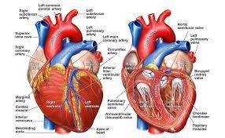

FCIH Hospital
Your Health Is Our Proiority

is a condition in which the liver does not function properly due to long-term damage. This
damage is characterized by the replacement of normal liver tissue by scar tissue Typically, the
disease develops slowly over months or years Early on, there are often no symptoms As the
disease worsens, a person may become tired, weak, itchy, have swelling in the lower legs,
develop yellow skin, bruise easily, have fluid build up in the abdomen, or develop spider-
like blood vessels on the skin The fluid build-up in the abdomen may become spontaneously
infected Other complications include hepatic encephalopathy, bleeding from dilated veins in
the esophagus or dilated stomach veins, and liver cancer Hepatic encephalopathy results in
confusion and may lead to unconsciousness.
Dr. Inessa Khaykis practice gastroenterology with a specialty in advanced procedures
such as Endoscopic Ultrasonography (EUS) with FNA and Capsule Endoscopy. Dr.
Khaykis graduated with a degree in Medicine from Chelyabinsk Medical Academy.
She completed her Internal Medicine residency, chief residency in Internal
Medicine, as well as her fellowship in Gastroenterology at the NYU Langone Medical
Center. In addition, Dr. Khaykis received an advanced training in Endoscopic
Ultrasonography of pancreatobiliary diseases at the Columbia-Presbyterian Medical
Center. Her research has included the role endoscopic ultrasonography in diagnosis and
treatment of pancreatobiliary diseases, epidemiology and prevention of infectious
liver diseases; obesity and weight loss surgery outcomes. She is currently a Clinical
Associate
Professor of Medicine at NYU. Dr. Khaykis’ areas of interest include
diagnosis and management of pancreatic cystic lesions, pancreatic cancer and
other gastrointestinal cancers, screening and prevention of colon cancer, management
of gastric esophageal reflux disease, peptic ulcer disease and IBD (Crohn’s disease and Ulcerative Colitis) .
Phone: 212-889-5544
Named several times as one of the city's top Gastroenterologists by New York Magazine, Dr. James Salik provides primary
care in addition to gastroenterology services. With an expertise in inflammatory bowel disease, irritable bowel syndrome
and diseases of the liver, he offers his patients expert and compassionate care.
Research Interest
residents and fellows in the techniques and practice Colonoscopy Liver Disease Inflammatory Bowel Disease Irritable
Bowel Syndrome Gastrointestinal Disorders
Cirrhosis affected about 2.8 million people and resulted in 1.3 million deaths in 2015. Of these, alcohol caused 348,000,
hepatitis C caused 326,000, and hepatitis B caused 371,000. In the United States, more men die of cirrhosis than
women. The first known description of the condition is by Hippocrates in the 5th century BCE. The word cirrhosis is
from Greek: "yellowish" and -osis meaning "condition", describing the appearance of a
cirrhotic liver
Phone: 212-889-5544